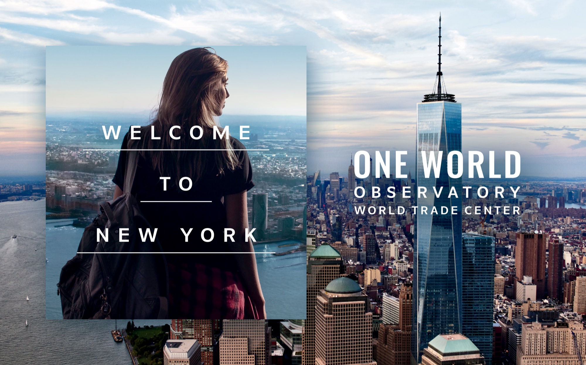
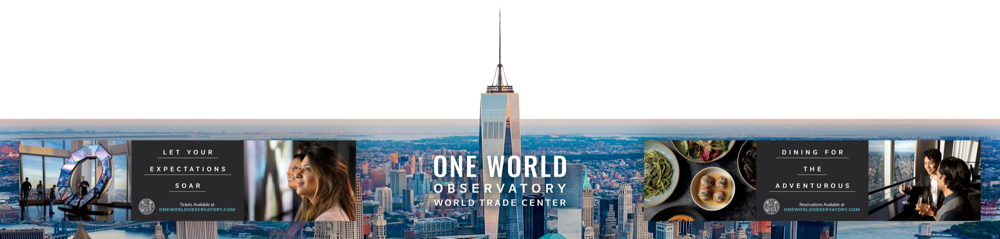
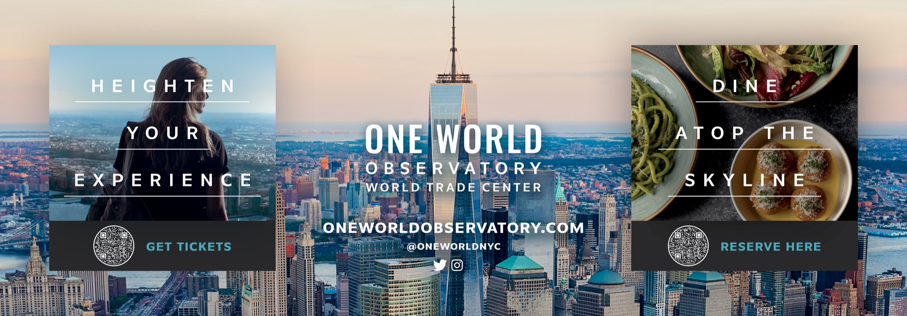
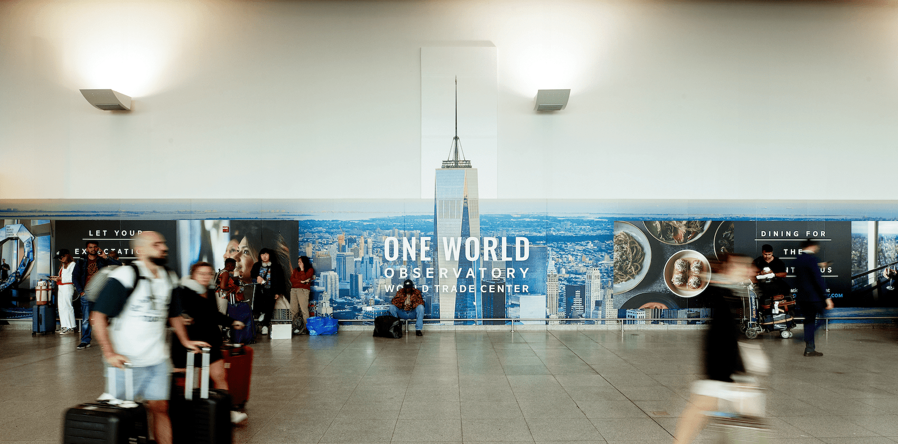

One World Observatory came to The Mixx wanting a series of ads in New York's John F. Kennedy Airport that would attract both tourists and residents alike.
We decided to tell a story over their journey in Terminal 4, from the welcome area through to baggage claim and ground transport.
The first ad was a welcome wall wrap, which greeted new arrivals with simple copy ("Welcome to New York.") and served as brand awareness. It positioned One World Observatory as synonymous with the city and all the excitement and possibilities it has to offer.
A second ad at baggage claim dialed up the excitement with inspirational copy that highlighted the observatory's views ("Heighten your experience.") and newly revamped restaurant, One Dine ("Dine atop the skyline.").
Then a final ad at the ground transport area continued this messaging and tapped into viewers' desires to make the most of their time in New York ("Let your expectations soar.") ("Dining for the adventurous.").
We knew that not everyone would see all of the ads as they were spread out across the airport, so each one needed to make an impact as a standalone ad and as part of a series, and drive viewers to buy tickets by scanning a QR code.
The resulting ads captured the sensory experience of the observatory and positioned it as a go-to destination for all viewers.


